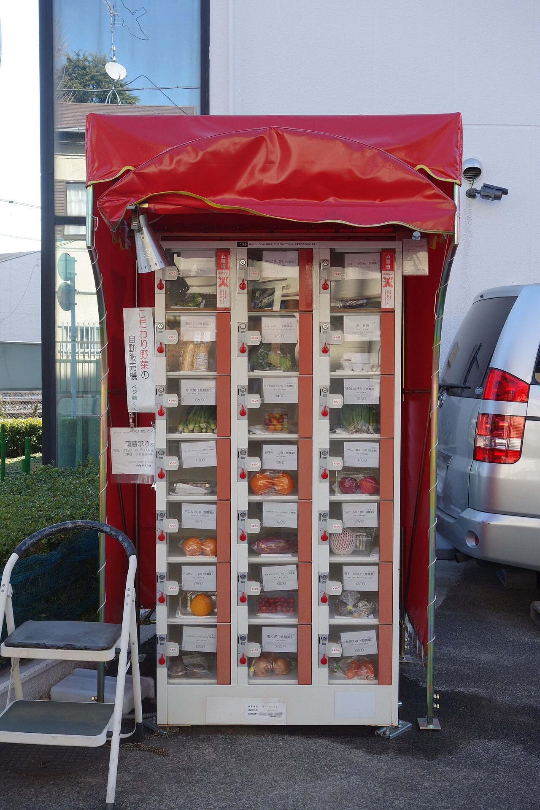

Japan with
Japan withAt 11:47 p.m., a Japanese vending machine is less a novelty than a tiny lighthouse. Its glowing rows promise cold water in August, hot coffee in January and an uncomplicated transaction when every nearby shop has closed. That ordinary reliability is the point. The strange machines—selling soup stock, frozen meals or locally grown eggs—could not exist without the vast, boringly useful network that taught people to trust the box.
The internet tells a more sensational story: Japan has a machine for every few dozen people, and somewhere among them you can buy absolutely anything. The first claim changes with the year and what the count includes. The second mixes machines still operating with publicity stunts, vanished locations and photographs circulating long after the product has gone. A better tour begins with what can actually be verified.
1. Dashi in a bottle—with a fish looking back
A drink-style machine containing amber bottles seems familiar until you notice the whole grilled flying fish inside. This is dashi, the soup stock that gives Japanese broths, simmered dishes and sauces their quiet depth. The bottle is a cooking ingredient, not a beverage. Dilute it for noodle soup or use a smaller amount to season rice and vegetables.

Why a machine? Bottles are standardized and shelf-stable, the footprint is small, and the product can be sold all day without staffing a shop. It turns a regional-flavored pantry item into street retail. Locations change, however. Treat a photograph as evidence that the idea exists, not a guarantee that the same machine will be waiting years later.
2. A hot bowl of ramen from a machine
At Haneda Airport Terminal 2, official Tokyo tourism information highlighted a vending area in 2026 with regional products, frozen airline meals, fruit mochi and a machine that prepares hot ramen. That last verb matters. Some “ramen vending machines” deliver a frozen kit to heat later; others cook or reheat a bowl for immediate eating. Check the display before paying rather than assuming every machine works like a restaurant robot.
Older noodle machines form another branch of the family tree. Retro machines heat and release a simple bowl of udon or ramen through a hatch. They survive in scattered roadside sites and specialist collections; Okayama’s tourism office recently documented only three udon machines remaining in the prefecture. The attraction is partly the meal and partly the mechanism: a fading piece of twentieth-century roadside life.
3. Vegetables with no cashier—and a farm at the other end
Fresh produce machines and coin-operated lockers sit somewhere between vending and Japan’s older unmanned farm stands. Open a door and you may find tomatoes, daikon, eggs or seasonal fruit placed there by a nearby grower. The inventory is small because that is the feature: it follows the harvest rather than a national supply chain.

This model depends on more than low theft. It works because the box is close to the producer, restocking can be folded into a daily routine, and customers understand that availability is irregular. Sold out is not a malfunction. It may mean the neighbors arrived first.
4. Soy milk in 36 flavors, frozen sushi—and dinner after closing
Tokyo’s official gourmet guide points to an Acure machine offering 36 soy-milk flavors and to food machines selling ramen, sushi and parfaits, often frozen. Frozen vending expanded because modern freezers let restaurants and makers turn a dish into an after-hours product. During staffing shortages, a machine can add a sales window without creating a second shift.
But “from a vending machine” does not mean ready to eat. Look for 冷凍 (reitō, frozen), 冷蔵 (reizō, chilled), and 温かい (atatakai, hot). A beautiful gyoza set may require a freezer, frying pan and instructions. For a traveler in a hotel room, that distinction can be the difference between dinner and luggage.
5. A phone case printed while you wait
Not every fascinating machine sells food. GO TOKYO reported that the Pick Me! Case machine at LABI Ikebukuro lets visitors create a customized smartphone case through a multilingual interface. It is a compact factory as much as a shop: choose a model and design, then the machine prints the object. This is vending pushed toward on-demand manufacturing—inventory becomes blank material plus software.
Airport machines use the opposite strategy. Instead of personalization, they package a place: regional noodles, souvenirs, desserts or airline meals become one last discovery before departure. Haneda’s lineups change, so consult the airport or tourism listing before making a special trip.
6. The restaurant machine that sells permission to eat
The machine beside a ramen shop door does not dispense ramen. It sells a meal ticket. Insert cash, press the button for your dish, take the printed ticket and hand it to staff. The system separates ordering and payment from cooking, reduces spoken back-and-forth at a busy counter, and makes the kitchen’s queue visible.
For visitors, Japanese-only buttons can be intimidating. Three clues do much of the work: 売切 means sold out, おつり is change, and 領収書 is a receipt. Insert bills flat, choose the main dish before extras, and do not walk away without the ticket. Newer screens may offer English and cashless payment; older grids may accept only coins and ¥1,000 notes.
Why does the system work?
Japan is not uniquely capable of building a refrigerated box. What stands out is the ecosystem: dense pedestrian routes, expectations of predictable service, frequent restocking, relatively low vandalism, and manufacturers able to maintain machines at scale. Space matters. A bright rectangle beside a building can trade twenty-four hours without becoming a full convenience store.
The economics are changing. Electricity, maintenance, cash handling and logistics are not free, while convenience stores and delivery compete for the same purchase. The future is not simply “more machines.” It is more selective machines: energy-efficient drink sellers, lockers linked to stores, multilingual interfaces, disaster-support functions, frozen restaurant dishes and products specific enough to justify their square meter.
A smart vending-machine safari
Start anywhere: a station platform, residential corner or highway rest stop. First notice the ordinary machine and who uses it. Then look for the local variation—regional fruit, a character design, emergency information, a farmer’s locker. The most revealing machine may not be the most photogenic one.
Japan’s vending machines are interesting not because they replace people, but because each box reveals which small transaction a community decided could happen without them.
Sources and limits
- GO TOKYO — Tokyo’s Coolest Vending Machines (2026)
- GO TOKYO — Japanese food vending machines
- JNTO — Japanese Vending Machines Like You’ve Never Seen
- JNTO — Ramen and ticket machines
- Okayama Tourism — Three remaining udon machines
- DyDo — Traveler’s vending-machine guide
Products and locations change; examples were checked against official tourism or operator pages on October 17, 2026. Historical photos illustrate machine types, not guaranteed current locations. No brand paid for inclusion.

See Japan between landmarks.
Walk real streets LIVE, then learn the Japanese around you through play.